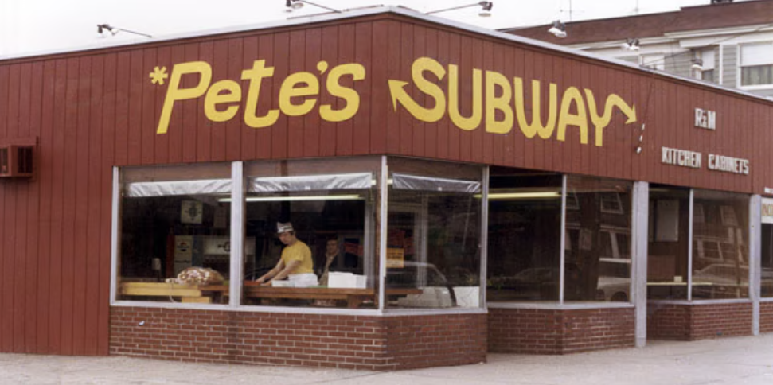
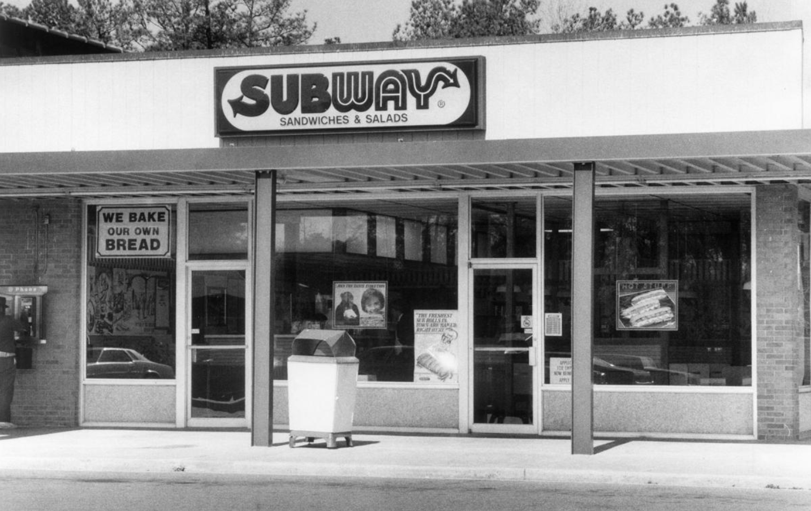
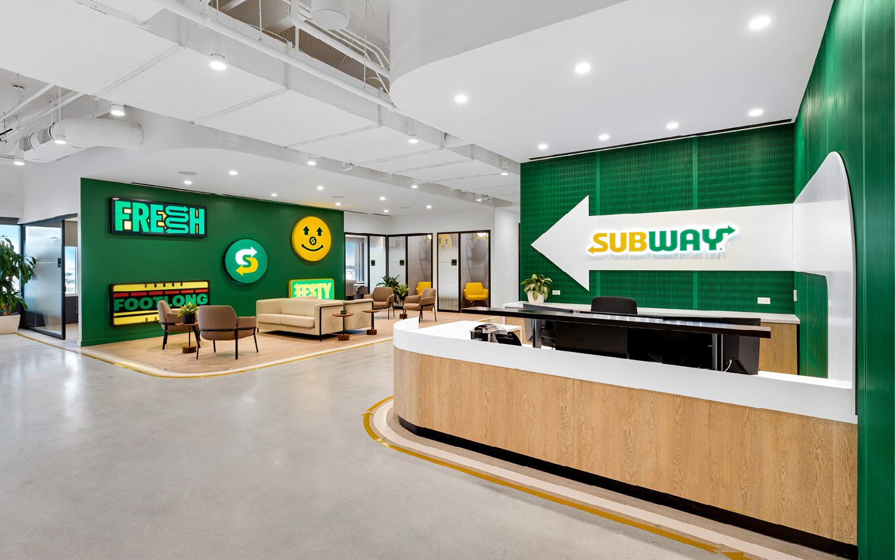

A HISTÓRIA DO SUBWAY®
O EMPREENDEDOR DE DEZESSETE ANOS
Em 1965, Fred DeLuca começou a realizar seu sonho de se tornar um médico. Buscando por um meio de ajudar a pagar seus estudos, um amigo da família sugeriu que ele abrisse uma loja de sanduíches "submarinos."

Com um empréstimo de US$ 1.000, o amigo, o Dr. Peter Buck, ofereceu-se como sócio de Fred, e um relacionamento de negócios que iria mudar o panorama do setor de lanches rápidos se formou.
A primeira loja foi aberta em Bridgeport, Connecticut, em agosto de 1965. Depois, estabeleceram uma meta de abrir 32 lojas em 10 anos. Fred logo aprendeu os fundamentos de administrar um negócio, assim como a importância de servir um produto bem feito e de alta qualidade, prestando excelente atendimento ao cliente, mantendo os custos operacionais baixos e encontrando ótimos endereços. Estas lições iniciais continuaram a servir como base para os vitoriosos restaurantes SUBWAY® em todo o mundo.
SUBWAY®, A FRANQUIA
Em 1974, a dupla possuía e operava 16 lojas de sanduíche "submarino" em Connecticut. Entendendo que não chegariam à meta de 32 lojas no prazo, começaram a abrir franquias, lançando a marca SUBWAY a um período de crescimento notável, que continua ainda hoje.

UM NOVO FUTURO
Hoje, a marca SUBWAY® é a maior cadeia de sanduíches "submarinos" do mundo, com mais de 39 mil unidades em todo o mundo. Nós nos tornamos a principal opção para pessoas que procuram refeições rápidas e nutritivas, que toda a família pode apreciar. Desde o começo, Fred tinha uma visão clara do futuro da marca SUBWAY. Enquanto continuamos a crescer, somos guiados pela sua paixão por deliciar os clientes ao servir sanduíches saborosos e feitos conforme o pedido.

Em 2025, a marca SUBWAY® passou a fazer parte da ZAMP®, uma operadora de restaurantes que acredita que comidas autênticas são sinônimo de novas descobertas para as pessoas. Juntas, as marcas agora compartilham o apetite pelo futuro e a vontade de transformar positivamente a vida das pessoas. Estamos prontos para crescer, conquistar novos mercados e trazer o mundo para as pessoas pela comida.